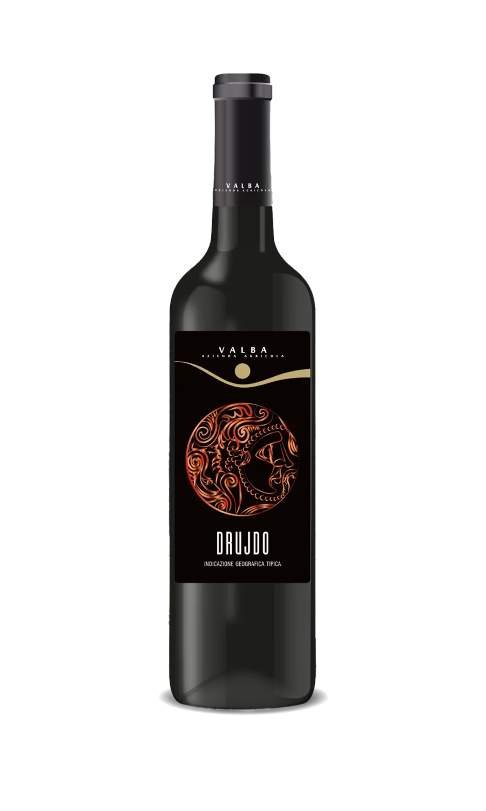
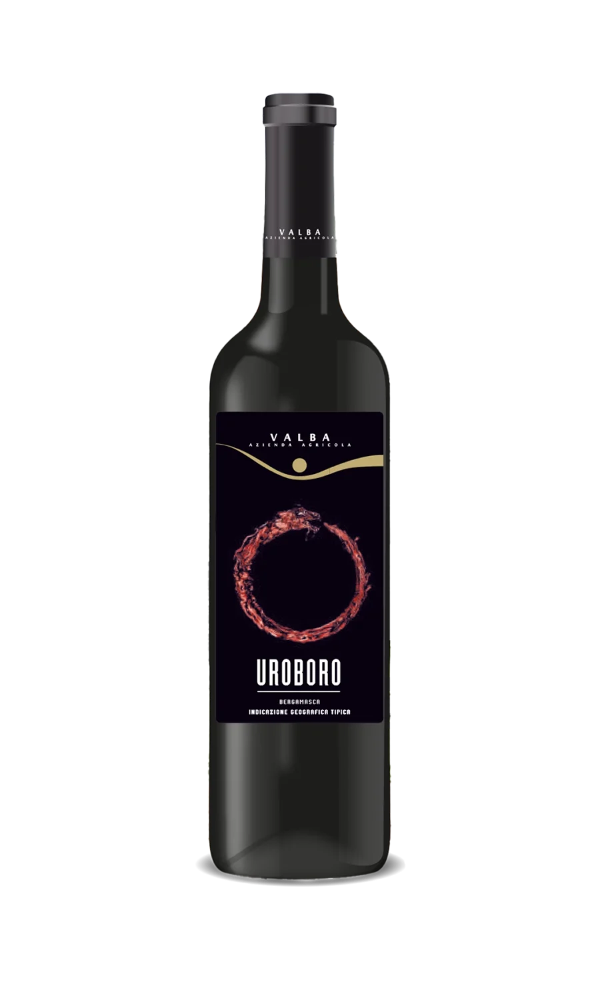
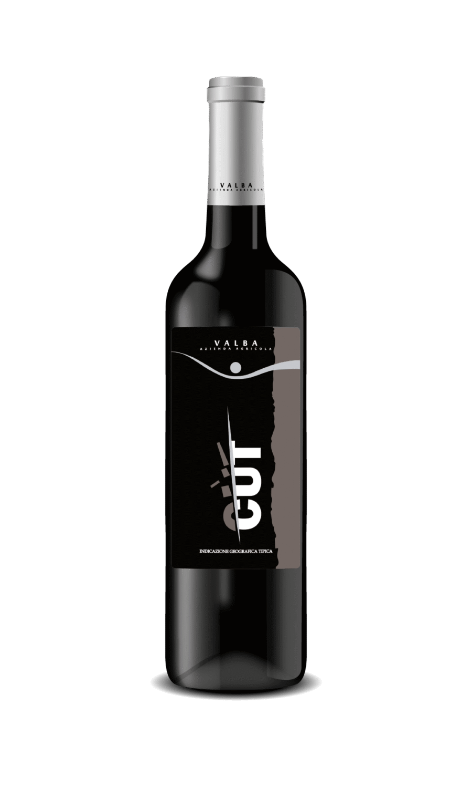
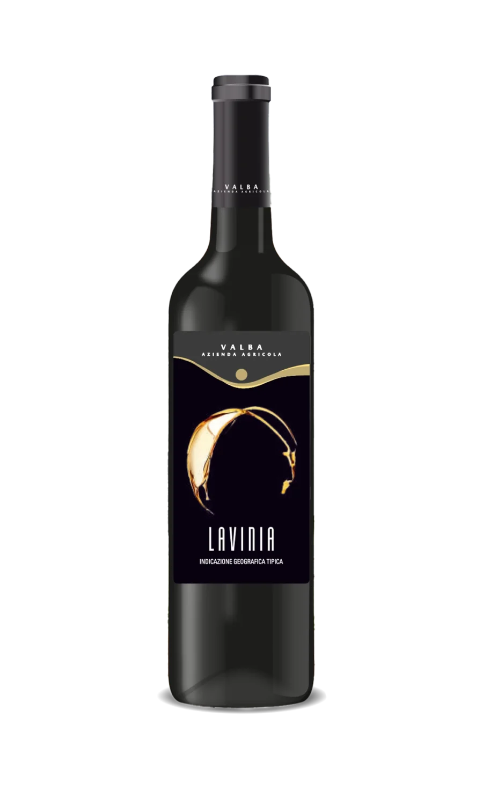

IGT Rosso della Bergamasca
Uroboro

Annata
2022
Uroboro è il nostro rosso IGT della Bergamasca: un vino che racchiude l'essenza del nostro territorio. Strutturato, persistente e di grande bevibilità, con note di frutta matura e spezie. Un nome che evoca il ciclo della natura e il ritorno alle origini, come il serpente che si morde la coda. Ideale per la tavola di ogni giorno e per accompagnare piatti della tradizione bergamasca.
Scheda Tecnica
🌡
Temperatura
16/18°C
🍖
Abbinamenti
Tradizione bergamasca, primi piatti, carni, formaggi
🏆 Premi e Riconoscimenti
- 🥈Medaglia d'Argento — Vinea Mondial du Merlot et Assemblage 2017
- 🥇Eccellenza e Medaglia d'Oro — CERVIM 2018
- 🥇Medaglia d'Oro — Vinea Mondial du Merlot & Assemblage 2019
- 🥇Medaglia d'Oro — Concorso Enologico Internazionale Città del Vino 2019
I nostri vini non sono acquistabili online. Contattaci direttamente o vieni a trovarci in cantina per acquistare o degustare.
Scopri Anche
Altri Vini Valba

